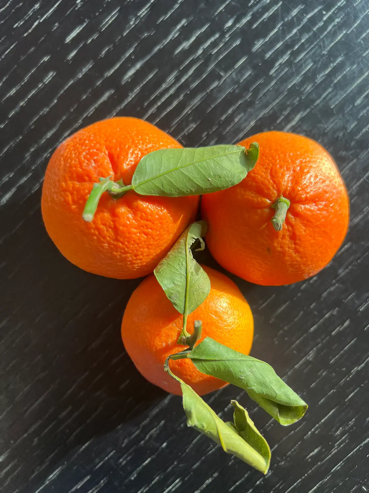
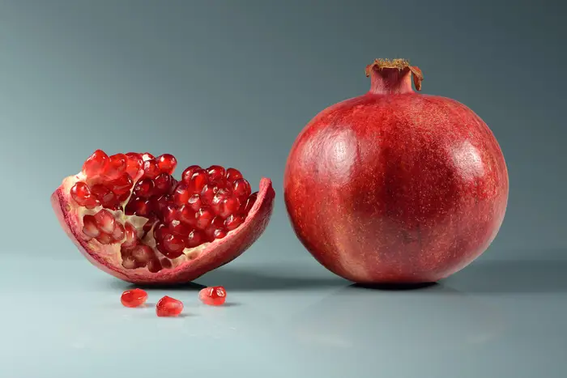

Svježe mandarine
Šest sorti, brane u sezoni od listopada do prosinca.
Gajba 10 kg · 18 €
Gajba 20 kg · 34 €

OPG Anđelić · Opuzen · od 2007.
Obiteljski uzgoj neretvanskih mandarina za one koji znaju razliku. Svježe voće, hladno prešani sokovi, džemovi i likeri izravno od proizvođača.
Naša priča
Kad su se zatvorila vrata, otvorili smo svoja.
Obitelj Anđelić iz Opuzena već dvadesetak godina uzgaja mandarine na plodnoj zemlji doline Neretve. OPG je 2007. osnovao Perica Anđelić, a danas uz njega radi i sin Ivan.
Dugo su rod prodavali veletržnicama za rusko tržište. Kad su sankcije taj kanal zatvorile, odlučili su ići izravno do kupaca i uložiti u kvalitetu. Danas njihove mandarine stižu u Split, Zagreb, Sloveniju i Češku.
Proizvodi
Šest sorti, brane u sezoni od listopada do prosinca.
Gajba 10 kg · 18 €
Gajba 20 kg · 34 €

Naš najtraženiji proizvod. Hladno prešan, pasteriziran.
Boca 1 l · 6 €

Kupina, marelica i malina, kuhani u malim serijama.
Staklenka 370 g · 5 €

Likeri te šipak, kupine, smokve, limun i aronija prema sezoni.
Liker 0,5 l · 14 €
Cijene su okvirne. Za restorane, hotele i delikatese cijena je na upit.
Sorte
Različito vrijeme dozrijevanja znači dulju sezonu i mogućnost da svaki tjedan ponudimo sortu na vrhuncu okusa.
Poklon paketi
Za Božić, poslovne partnere i drage ljude. Paket slažemo ručno, a sadržaj možemo prilagoditi.
Hladno prešani sok i domaći džem.
29 €
Sok, džem, liker i gajba odabranih mandarina.
od 49 €
Veće količine i prilagođen sadržaj za poslovne darove.
cijena na upit

Za partnere (B2B)
Stalan izvor svježih mandarina i hladno prešanih sokova od proizvođača koji poznaje svako stablo u svom nasadu.
Isporučujemo i u Sloveniju i Češku.
Zatražite ponuduKako uzgajamo
Tlo njegujemo organskim gnojivima.
Zaštita nasada bez nepotrebnog prskanja.
Točno onoliko vode koliko stablo treba.
Suradnja s pčelarima za prirodno oprašivanje.
Sezona
Mandarine od listopada do prosinca. Ostalo voće prema sezoni.
Galerija
Upit
Ugostitelji, trgovci, tvrtke i privatni kupci: recite nam što trebate. Upit se otvara u WhatsAppu ili Viberu, spreman za slanje.
OPG Anđelić
Put Zlatinovca 17
20355 Opuzen